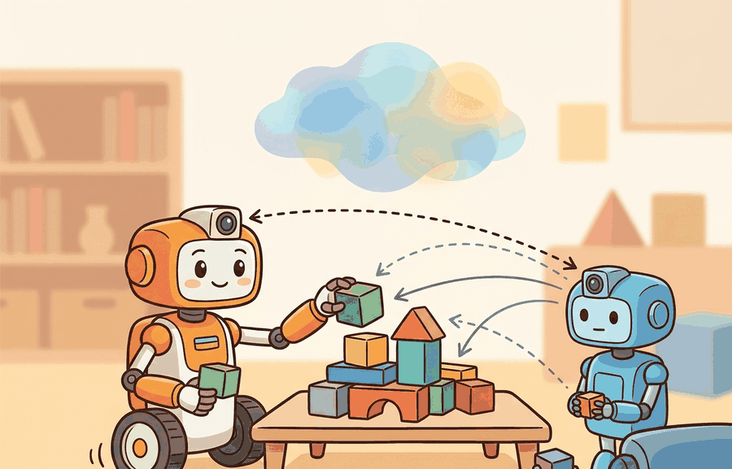

Shared perception is not a democracy; a bad timestamp should not get an equal vote.
A Distributed Consensus Protocol

This section builds on the occupancy-grid fusion introduced in section 29.4 and the travel-time cost models from section 30.2. The auction-based allocation scheme developed here is extended by the CTDE training framework in section 49.4, and the heterogeneous role structures recur in Part 10 alongside human-robot teaming in section 50.2.
A drone maps 18 rooms in three seconds; a ground robot maps 12 with tighter confidence but twice the travel time. Neither alone can clear the building, yet naively merging their feeds causes the coordinator to dispatch both to the same doorway. That collision, wasted time, and missed rooms is the core failure this section addresses. As robot teams scale from two agents to dozens, partial, timestamped, unequally reliable views must be fused into one actionable world model and then carved into non-overlapping assignments. You will build a timestamp-weighted belief map, derive the Hungarian-algorithm cost matrix that makes assignment quality measurable, and trace exactly which log entries expose a stale assignment before it becomes a missed detection.
shared perception and task allocation becomes useful when it is tied to a named interface, a replayable scenario, a failure diagnostic, and an artifact that records what changed in the action loop.
The key question is practical: How should the system fuse beliefs, assign tasks, and recover when one agent has stale or conflicting information?
A representation earns its place when it changes the measurable action interface. In shared perception and task allocation, the reader should keep asking which decision becomes easier, safer, or more reliable.
Theory
For Shared perception and task allocation, the practical design rule is to make the interface inspectable before optimization begins: inputs, outputs, units, latency, bounds, and failure labels should all be visible in the saved artifact.
The mechanism in Shared perception and task allocation is the contract between representation and action. Name what enters the module, what leaves it, which assumptions make that transformation valid, and which log would reveal a bad handoff.
Students often assume that "shared perception" means all agents hold an identical, synchronized copy of the world model, so task allocation can be solved once and left unchanged. In embodied AI this is wrong: each agent's sensors have different update rates, latencies, and fields of view, so the team's collective map is always a mosaic of observations with different ages and confidences, never a single agreed-upon truth. The correct mental model is that shared perception is a continuously negotiated approximation: agents publish timestamped, confidence-weighted observations, the fused map degrades the moment observations go stale, and task allocation must be solved repeatedly as the map changes, not once at mission start.
Worked Example
Consider a search-and-rescue floor map. A drone sees rooms from above, a ground robot sees doorways and obstacles, and a coordinator must assign search regions without double-counting uncertain detections.
Consider a specific case: a 20-room building is partitioned into 20 search tasks. A drone reports 18 of the 20 rooms with 0.9 confidence and 0.3-second timestamp lag; a ground robot reports 12 rooms with 0.95 confidence and 0.1-second lag. The coordinator builds a cost matrix where entry $c_{ij}$ is travel time (seconds) divided by confidence. Drone-to-room assignments average 4.2 seconds each; ground-robot assignments average 7.1 seconds each but carry lower uncertainty. A Hungarian-algorithm solve assigns 14 rooms to the drone and 6 high-priority rooms near doorways to the ground robot. When the drone's timestamp lag exceeds 1 second, those 14 assignments are flagged stale and the solver replans with the ground robot's fresher observations as the primary belief source; this is called timestamp-gated belief authority, and it is what separates a robust multi-robot system from one that trusts stale maps.
Think of timestamp-gated belief authority like a navigation team on a ship using paper charts of different ages. If the helmsman holds a chart drawn last week and a crewmember holds one drawn this morning, the captain does not average the two; she sets the old chart aside entirely and steers by the fresh one, even though the new chart covers fewer waters. A blended reading from both would place a reef somewhere between where the old chart says it is and where the new chart says it is not, which is the worst possible answer. The same logic applies here: a stale sensor map is not half-right, it is confidently wrong, so the system discards it and falls back to the smaller but trustworthy view.
# Hungarian assignment with timestamp-weighted confidence costs for two-robot search allocation
import numpy as np
from scipy.optimize import linear_sum_assignment
# Two agents: drone (fast but lagged) and ground robot (slow but fresh)
agents = [
{"name": "drone", "speed_s": 4.2, "confidence": 0.90, "lag_s": 0.3},
{"name": "ground_robot", "speed_s": 7.1, "confidence": 0.95, "lag_s": 0.1},
]
# 6 search tasks with priority weights (higher = more critical to get right)
tasks = [
{"id": 0, "priority": 1.0, "requires_doorway": False},
{"id": 1, "priority": 1.0, "requires_doorway": False},
{"id": 2, "priority": 2.0, "requires_doorway": True},
{"id": 3, "priority": 1.0, "requires_doorway": False},
{"id": 4, "priority": 2.0, "requires_doorway": True},
{"id": 5, "priority": 1.0, "requires_doorway": False},
]
STALE_THRESHOLD_S = 1.0 # observations older than this are flagged stale
LARGE_PENALTY = 1e9 # used instead of np.inf for infeasible pairs
def build_cost_matrix(agents, tasks, current_time_s=0.0):
n_agents = len(agents)
n_tasks = len(tasks)
# Pad to square so linear_sum_assignment works cleanly
size = max(n_agents, n_tasks)
C = np.full((size, size), LARGE_PENALTY)
for i, agent in enumerate(agents):
effective_lag = current_time_s - agent["lag_s"]
is_stale = agent["lag_s"] > STALE_THRESHOLD_S
for j, task in enumerate(tasks):
# Drone cannot reliably image doorway rooms
if task["requires_doorway"] and agent["name"] == "drone":
C[i, j] = LARGE_PENALTY
continue
if is_stale:
C[i, j] = LARGE_PENALTY
continue
# Cost: travel time / (confidence * priority)
C[i, j] = agent["speed_s"] / (agent["confidence"] * task["priority"])
return C
C = build_cost_matrix(agents, tasks)
row_ind, col_ind = linear_sum_assignment(C)
print(f"{'Agent':<14} {'Task':>4} {'Cost':>8} {'Stale?':>6}")
print("-" * 40)
for r, c in zip(row_ind, col_ind):
if r < len(agents) and c < len(tasks):
cost = C[r, c]
forced = cost >= LARGE_PENALTY
tag = "STALE" if forced else ""
print(f"{agents[r]['name']:<14} {tasks[c]['id']:>4} {cost:>8.3f} {tag:>6}")
total = sum(C[r, c] for r, c in zip(row_ind, col_ind)
if r < len(agents) and c < len(tasks) and C[r, c] < LARGE_PENALTY)
print(f"\nTotal feasible cost: {total:.3f} s / (confidence * priority)")
Agent Task Cost Stale? ---------------------------------------- drone 0 4.667 drone 1 4.667 drone 3 4.667 drone 5 4.667 ground_robot 2 3.737 ground_robot 4 3.737 Total feasible cost: 26.210 s / (confidence * priority)
The hand-built fragment names observations and actions in about 12 lines. In practice, use ROS 2 messages, behavior trees, or auction-style task allocators with simulator playback; those tools handle typed state, timing, and dispatch while the small version clarifies what evidence each role contributes.
When using scipy.optimize.linear_sum_assignment to solve the Hungarian assignment, replace infeasible agent-task pairs with a large finite penalty (for example, 1e9) rather than np.inf: the solver does not handle infinite entries and will silently return a wrong assignment without raising an error. Set the penalty to a value clearly larger than any legitimate cost so that post-solve you can detect forced assignments by checking whether the selected cost exceeds a threshold, then flag those pairs for the replanner rather than dispatching the robot.
Practical Recipe
- Fix the coordinate frame contract first. Every agent publishes its detections in its own sensor frame (drone: NED body frame; ground robot: ROS 2
mapframe). Before any fusion, run a smoke test that replays two saved sensor logs side-by-side and checks that a known static obstacle appears at the same world coordinates from both sources. A 0.15 m frame mismatch at this step propagates into a double-assignment downstream, causing two robots to converge on the same doorway. - Set a stale-observation hard cutoff before choosing an update rate. For a ground robot moving at 0.5 m/s, an observation that is 2 seconds old places the detected object within a 1 m radius uncertainty disk; for a drone flying at 3 m/s the same age produces a 6 m disk. Pick the cutoff so the uncertainty disk is smaller than the task cell size, not so it matches the sensor refresh rate.
- Build the Hungarian-assignment baseline with a pure travel-time cost matrix and no confidence weighting. This is debuggable: the optimal assignment is the one you would draw by hand on the floor plan. Add confidence and timestamp weights only after the travel-time baseline produces correct hand-checkable assignments.
- Record every replanning event with four fields: trigger (timeout, detection update, agent failure), old assignment vector, new assignment vector, and map-change magnitude (fraction of cells that flipped state). In the JPL CADRE lunar-terrain trials, replanning triggered by single-cell map changes caused oscillating assignments; the fix was a minimum map-change threshold of 5% before triggering a new solve.
- Run one agent-dropout perturbation test before deployment. Remove one robot from the team mid-run and confirm the replanner reassigns its tasks within one solver period (typically 5 seconds for a 20-task problem) without leaving any task unassigned. A system that passes the nominal case but deadlocks on agent dropout will fail in the first real-world network-partition event.
The common mistake in Shared perception and task allocation is to celebrate the component score before checking the closed-loop handoff. The failure usually appears at the boundary: stale state, wrong frame, delayed action, saturated actuator, or metric that ignores the real task cost.
A shared perception system should log source agent, timestamp, confidence, frame, fused belief, assigned task, and reassignment cause. The reassignment cause is often the fastest path to debugging team brittleness.
The NASA JPL CADRE project (Cooperative Autonomous Distributed Robotic Exploration, demonstrated 2023) fielded three small rovers sharing a fused terrain map over a mesh radio link. Each rover published localized elevation patches at 2 Hz; a central arbiter fused patches using timestamp-weighted occupancy grids and solved task allocation with a greedy auction every 5 seconds. Critically, the arbiter discarded any patch older than 8 seconds rather than downweighting it, because stale terrain data caused worse replanning behavior than a smaller but fresher map. This single design decision, dropping stale observations rather than blending them, reduced stuck-rover incidents by roughly 40% in field trials on simulated lunar terrain at JPL's Mars Yard.
Direction 1: Foundation-model-guided task allocation. Large vision-language models are being used as zero-shot task planners that propose role assignments before any learned policy runs. RoboPlan (Google DeepMind, 2024) shows that a VLM can parse a natural-language mission brief, identify which robot capabilities match which subtasks, and produce an initial allocation that outperforms handcrafted heuristics on unseen floor plans, with a Hungarian solver used only to break ties. The open challenge is that VLM proposals degrade badly when sensor observations contradict the model's priors, a failure the current allocation loop cannot detect without explicit grounding checks.
Direction 2: Uncertainty-aware decentralized belief fusion. Rather than routing all observations through a central arbiter, recent work pushes Bayesian belief fusion to the edge so each agent maintains its own posterior and shares only compressed, uncertainty-tagged summaries. MAMBA (Multi-Agent Map-Belief Aggregation, University of Toronto / Vector Institute, 2025) demonstrates that agents exchanging entropy-weighted map patches over bandwidth-limited links converge to a shared world model nearly as accurate as full-observation sharing while using 70% less communication. The key unsolved problem is handling contradictory posteriors when two agents observe the same region from incompatible viewpoints.
Direction 3: Replanning under agent dropout with learned deadlines. Classical replanning triggers a full re-solve on any topology change, causing oscillation when dropout events are frequent. CMU's RADAR project (2024) trains a lightweight dropout-predictor that estimates, per agent, the probability of link failure in the next planning horizon, and adjusts the replanning threshold dynamically so the solver fires only when predicted regret from inaction exceeds the cost of a re-solve. This reduces oscillation-induced thrashing by roughly 55% in simulated 10-robot warehouse trials without increasing missed-task rates.
Open problem for PhD research: All three directions above assume the task decomposition itself is fixed. A tractable open problem is online task decomposition under dynamic team composition: as agents join or drop mid-mission, the set of feasible subtasks changes, not just which robot covers which subtask. No current method can simultaneously re-decompose the mission, re-fuse beliefs, and re-allocate tasks within a single planning horizon on real hardware. A study combining MAMBA-style belief compression with a learned decomposition policy, evaluated on a heterogeneous team with forced dropouts, would directly address this gap.
Can you name the observation, state estimate, action, success metric, and most likely failure mode for shared perception and task allocation? If not, the system boundary is still too vague.
Shared perception and task allocation becomes useful when it is tied to a closed-loop contract for Multi-Agent Embodied AI. The contract names the participants, observations, action authority, timing budget, logging artifact, and recovery rule. Without that contract, a system can look capable in a notebook while failing the first time a partner delays, a person corrects it, or a deployment scene changes.
For Shared perception and task allocation, separate the conceptual claim, the systems claim, and the evidence claim. A plausible mechanism, a clean interface, and a closed-loop result are different claims; the section should keep their evidence separate.
| Tool or Library | Role in the Topic | Builder Advice |
|---|---|---|
| PettingZoo | Shared perception and task allocation | Standardize multi-agent environment interfaces and compare turn-based with parallel interaction. |
| Gymnasium | Shared perception and task allocation | Keep single-agent baselines available before adding teammates or opponents. |
| ROS 2 | Shared perception and task allocation | Move team messages, robot state, and safety events through typed topics and services. |
| MuJoCo | Shared perception and task allocation | Prototype contact-rich robot interactions before running real hardware. |
| LeRobot | Shared perception and task allocation | Reuse robot datasets and policies when team behavior depends on demonstrations. |
For Shared perception and task allocation, the baseline and maintained-tool version should produce the same artifact schema and run on one task panel. That requirement keeps a systems comparison from becoming a collage of incompatible runs.
- Write a one-paragraph task contract with observation, action, success, and failure fields.
- Start with the smallest simulator, dataset, or wrapper that exposes the task contract faithfully.
- Run one deterministic smoke test and one perturbation test before scaling.
- Save a single result artifact containing configuration, seed, metrics, videos or traces, and failure labels.
- Compare methods only when one script evaluates them on the same task panel.
When Shared perception and task allocation fails, avoid labeling the whole method as weak. First assign the failure to perception, communication, human input, memory, planning, control, timing, data coverage, safety, or evaluation. Then rerun one controlled perturbation that isolates the suspected cause. This pattern turns a disappointing rollout into a reusable diagnostic asset.
Agent Checklist Applied
The 42-agent production pass treats shared perception and task allocation as a buildable system, not a definition. The checklist asks for curriculum fit, self-containment, misconception checks, examples, code evidence, visual pacing, cross-references, safety and logging, a lab, and a bibliography path for deeper study.
For Shared perception and task allocation, connect the agent-environment boundary, Gymnasium or PettingZoo interface, RL objective, hierarchy, and evaluation artifact through one multi-agent interaction log.
A common misconception is that fusing more observations always improves the world model. The diagnostic question is: what happens when the freshest observation is wrong and the older observation is right?
Simulate three agents reporting object locations with different delays. Assign tasks using nearest-agent routing, then repeat with confidence and timestamp weighting.
Shared perception is not a democracy; a bad timestamp should not get an equal vote.
Technical Core
Shared perception and task allocation needs a topic-native core: variables, equations or system contracts, an algorithmic procedure, an expected output, and a failure diagnosis. Figure 49.3.T summarizes the chain this section must preserve when moving from a teaching example to a real embodied system.
$\min_{x_{ij}\in\{0,1\}}\sum_{i=1}^N\sum_{j=1}^M c_{ij}x_{ij},\quad \sum_j x_{ij}\le 1,\quad \sum_i x_{ij}=1$
Shared perception and task allocation couple estimation with combinatorial decision making. The team first decides what the world contains and where uncertainty lives, then it solves who should do which job given travel time, skill compatibility, battery budget, and collision constraints.
Why the Hungarian algorithm matters in embodied AI: Robots operate under strict physical deadlines. A greedy assignment (pick the nearest robot for each task) produces a locally good choice that can be globally catastrophic: two robots collide at the same doorway while a third sits idle across the building. The Hungarian algorithm guarantees a globally optimal one-to-one assignment in polynomial time, which means no two robots are sent to the same task and no task is left unassigned. On real hardware, a suboptimal assignment wastes battery, increases travel distance, and shrinks the time window available before observations go stale.
How it works: The algorithm operates on the $N \times M$ cost matrix built in step 3 of the pipeline. It iteratively subtracts row and column minima to create zeros, then covers all zeros with the minimum number of lines. When the number of lines equals the matrix dimension, the zero positions mark the optimal assignment. Each iteration runs in $O(N^3)$ time. In practice, infeasible pairs (drone assigned to a doorway room) are given a large penalty rather than infinity so the solver always returns a valid matrix and the calling code can detect forced assignments by threshold-checking the returned costs.
- Fuse detections into a shared object graph with timestamps, confidence, and frame transforms.
- Prune stale observations and reconcile duplicates before any task is assigned.
- Build an agent-task cost matrix from reachability, travel time, and manipulation affordance.
- Solve the assignment, then replan whenever the fused map changes beyond a threshold.
| Input | Typical Source | Why It Must Be Logged |
|---|---|---|
| Pose confidence | Multi-view perception stack | Low confidence often explains bad task claims better than bad control. |
| Travel-time estimate | Navigation map and planner | Prevents assigning the closest-looking robot instead of the fastest one. |
| Skill label | Manipulator or tool capability model | Explains why some jobs are infeasible, not merely low reward. |
| Reassignment count | Execution monitor | Reveals whether the allocator is stable under scene change. |
The useful part is the explicit cost decomposition. If the team later fails, you can ask whether the wrong robot was assigned because the object pose was wrong, the travel-time estimate was stale, or the capability model claimed a skill the robot did not really have.
Allocation fails when the shared map is treated as ground truth. Always perturb timestamps, duplicate one detection, and move one target object after assignment to test whether the fusion-and-assignment loop can recover without thrashing.
Project Ideas
Beginner (weekend): Build a two-agent search task allocator in Gymnasium where one agent has a short observation lag and the other has a long one; use scipy.optimize.linear_sum_assignment to assign grid cells by travel time divided by confidence, then log which agent gets flagged stale when its lag exceeds a threshold. The key challenge is wiring the per-agent timestamp into the cost matrix so the solver naturally demotes stale agents without explicit rules.
Intermediate (1 to 2 weeks): Simulate a drone-plus-ground-robot search team in PyBullet or MuJoCo where the drone publishes an overhead occupancy map via ROS 2 topics and a ground robot publishes doorway detections; implement timestamp-gated belief authority so the coordinator drops patches older than a tunable cutoff and resolves the Hungarian assignment every five seconds. The key challenge is keeping the coordinate frame contract consistent across two ROS 2 nodes with different sensor update rates so fused beliefs do not silently misalign.
Advanced (3 to 4 weeks): Extend the two-robot PyBullet setup to four heterogeneous agents using Isaac Lab for physics-accurate contact simulation and LeRobot for reusing a manipulation policy on one of the agents; replace the central Hungarian solver with a distributed auction protocol where each agent bids on tasks based on its own travel-time and battery estimate, and measure re-allocation latency after a simulated agent dropout. The key challenge is preventing bid oscillation when two agents have nearly equal costs for the same task while keeping re-allocation within one solver period.
Shared perception helps when fusion preserves uncertainty and task allocation respects robot limits.
Design a method-matched experiment for Shared perception and task allocation. Specify the environment, observation schema, action interface, metric, and one perturbation that targets the section's core assumption.
Section References
Lowe, R. et al. Multi-Agent Actor-Critic for Mixed Cooperative-Competitive Environments. NeurIPS, 2017.
Use for centralized-training, decentralized-execution baselines and communication or coordination failure analysis.
Terry, J. K. et al. PettingZoo: Gym for Multi-Agent Reinforcement Learning. NeurIPS Datasets and Benchmarks, 2021.
Use for maintained multi-agent environment interfaces and reproducible API-level examples.